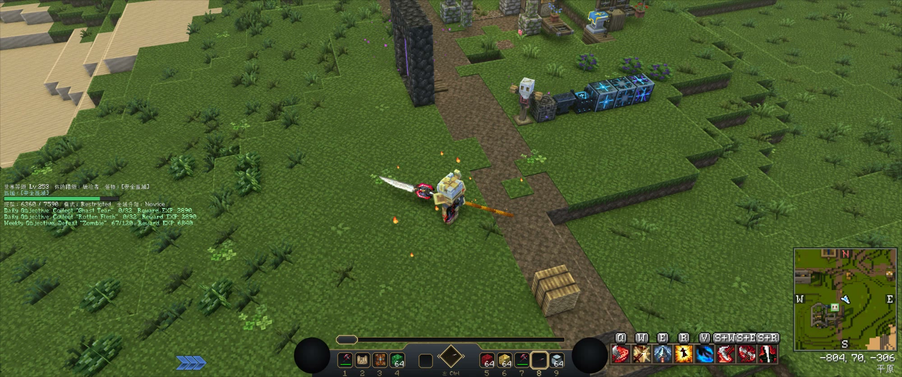

一个与众不同的 Minecraft 模组整合包
主打 MOBA 俯视角的 ARPG 体验
如同“Minecraft Dungeons”、“Diablo”系列以及“Path of Exile”的纯正 ARPG 玩法视角，带给你截然不同的 Minecraft 体验。
独特的操作方式与沉浸式互动界面
点击画面进行移动，取代传统 WASD 移动方式。游戏中将带给你更加丰富的交互方式与动画，身临其境地置身于奇幻世界之中。
完整的世界观与设定
拥有专属的世界观、故事设定，在这片土地上的故事将由你亲手挖掘、开拓。完善的世界历史将使你漫游在名为“鲁瓦多”的大陆中，并且成为命运的一部分。
孤身奋斗于这片充满谜团的土地，或是与余烬中的生命一起并肩作战。
游戏特色
专属打造的机制系统模组
多达 20 个以上的自制核心系统模组，组成萨瓦鲁最独特的 RPG 游戏体验。
视角与操作融合切换
不用担心操作不习惯。F5 随意切换第三与第一人称，操作方式也一起变化。
活跃的社区反馈
快速且方便的意见反馈方式与社区链接，问题的反馈不再拖延。
独有的角色账号存取档机制
拥有角色存档功能，让你横跨不同世界打造同一个专属角色。




常见问题
服务器无法加入，怎么办？
请检查游戏版本是否为最新测试版，本整合包专属服务器以官方最新发布的测试版本为主。
这是 Minecraft 整合包吗？
是的，这是 Minecraft 的 Fabric 整合包，游戏版本为 1.21.1。
需要正版 Minecraft 吗？
是的，需要正版 Minecraft 账号才能联机和开始游戏。
可以单人游玩吗？
可以。我们的整合包以多人社区功能为主，但也能用单人离线模式游玩。